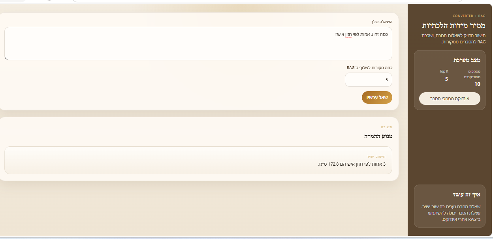

AI/RAG + Domain Logic
Halachic Measurement Converter + RAG Layer
A full-stack halachic measurement converter with a structured JSON knowledge base, deterministic calculation engine, document ingestion flow, and optional AI/RAG explanation layer.
ReactTypeScriptNode.jsRAG-ready